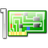

Netzwerkinstallation
Mit minimalen Boot-Images auf CD, Festplatte, USB-Stick oder auf einem TFTP-Server können Ubuntu und seine Derivate über ein Netzwerk installiert werden. Die Installationswege sind in einzelnen Artikeln beschrieben, auf dieser Seite werden der einfachen Wartung halber die Download-Links gesammelt.
Die Boot-Images bringen mit ca. 9 - 40 MiB nur die nötigsten Komponenten, um den Rechner zu starten. Alle weiteren Installer-Komponenten werden über das Netzwerk geladen. Über den klassischen Debian-Installer kann wie bei der Alternate Installation fortgefahren und wie bei der Minimalinstallation ein minimales System installiert werden und durch Nachrüsten der jeweiligen Metapakete kann man eine beliebige Desktop-Umgebung einrichten. Der (U)EFI-Modus wird nicht unterstützt, da die Netzwerkinstallation nur im BIOS-Modus startet. Für EFI geht man stattdessen nach dem Artikel Minimalinstallation vor.
Mini-CD-Image¶
Die Mini-CD kann von einem CD-/DVD-Laufwerk gebootet werden.
| Ubuntu Version | |||
| Architektur | 14.04 Trusty Tahr (LTS) | 16.04 Xenial Xerus | 17.10 Artful Aardvark |
| i386 (32-Bit) | mini.iso  | mini.iso | mini.iso |
| amd64 (64-Bit) | mini.iso | mini.iso | mini.iso |
HD-Image¶
 Eine Festplatten-Partition kann in einem laufenden System als Installationsmedium vorbereitet werden, dazu wird neben einem CD-Image eines der folgenden Boot-Images benötigt.
Eine Festplatten-Partition kann in einem laufenden System als Installationsmedium vorbereitet werden, dazu wird neben einem CD-Image eines der folgenden Boot-Images benötigt.
| Ubuntu Version | |||
| Architektur | 14.04 Trusty Tahr (LTS) | 16.04 Xenial Xerus (LTS) | 17.10 Artful Aardvark |
| i386 (32-Bit) | boot.img.gz | boot.img.gz | boot.img.gz |
| amd64 (64-Bit) | boot.img.gz | boot.img.gz | boot.img.gz |
PXE¶
 Für die PXE-Installation wird eines der folgenden Archive benötigt.
| Ubuntu Version | |||
| Architektur | 14.04 Trusty Tahr (LTS) | 16.04 Xenial Xerus (LTS) | 17.10 Artful Aardvark |
| i386 (32-Bit) | netboot.tar.gz | netboot.tar.gz | netboot.tar.gz |
| amd64 (64-Bit) | netboot.tar.gz | netboot.tar.gz | netboot.tar.gz |

- Erstellt mit Inyoka
-
 2004 – 2017 ubuntuusers.de • Einige Rechte vorbehalten
2004 – 2017 ubuntuusers.de • Einige Rechte vorbehalten
Lizenz • Kontakt • Datenschutz • Impressum • Serverstatus -
Serverhousing gespendet von